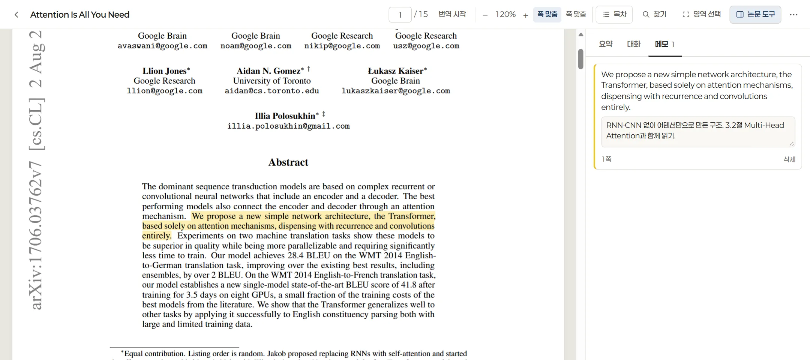
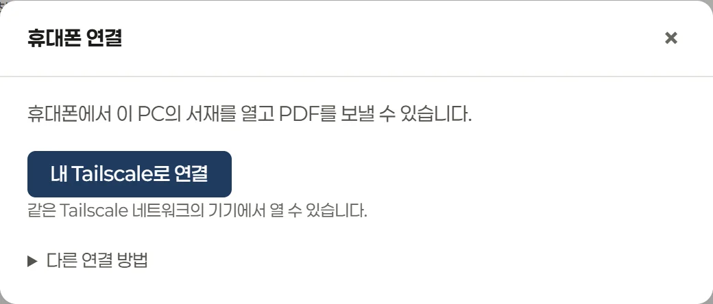

메모하고 이어 읽기
문장을 드래그한 뒤 색을 골라 강조하거나 메모를 눌러 생각을 적으세요. 적어 둔 내용은 논문 도구 → 메모에 모입니다.
다음에 홈의 이어 읽기에서 논문을 열면 읽던 쪽으로 돌아갑니다. 읽기와 메모는 AI 계정 없이 쓸 수 있습니다.
본문에서 찾고 이동하기
Ctrl+F로 본문을 검색하세요. 목차나 인용·그림 링크를 따라간 뒤에는 ← 이전 위치로 돌아갈 수 있습니다.

Windows 10·11용
Windows용 64비트 설치파일설치하지 않고 쓰려면 압축 버전(ZIP, 19.4 MB)을 받아 쓰기 가능한 폴더에 모두 풀고 Sunlight.exe를 엽니다.

문장을 드래그한 뒤 색을 골라 강조하거나 메모를 눌러 생각을 적으세요. 적어 둔 내용은 논문 도구 → 메모에 모입니다.
다음에 홈의 이어 읽기에서 논문을 열면 읽던 쪽으로 돌아갑니다. 읽기와 메모는 AI 계정 없이 쓸 수 있습니다.
Ctrl+F로 본문을 검색하세요. 목차나 인용·그림 링크를 따라간 뒤에는 ← 이전 위치로 돌아갈 수 있습니다.
⋯ → 설정에서 평소 쓰는 AI 계정(Codex, Claude, Gemini)을 연결하세요.
문장을 드래그하면 보낼 내용과 서비스 이름이 표시됩니다. 번역이나 설명을 누르면 읽던 곳에서 답을 볼 수 있습니다. 사용량은 연결한 계정에서 차감됩니다.

⋯ → 논문 비교표에서 논문을 고르세요. 열 설정에서 연구 방법, 결과처럼 나란히 볼 항목을 정할 수 있습니다.
표 만들기를 누르면 고른 논문의 본문과 열 지침을 연결한 AI로 보냅니다. 결과는 한 편당 한 행으로 표시되며, 앱에서 원문 근거를 확인하거나 Excel·CSV로 저장할 수 있습니다.

PC와 Sunlight를 켜 두면 휴대폰에서 논문을 읽거나 새 PDF를 PC로 보낼 수 있습니다.

설치 파일에 Windows 게시자 인증서가 없어 경고가 뜰 수 있습니다. 이 페이지에서 받은 파일인지 먼저 확인하세요. 받은 파일 확인
‘일반적으로 다운로드되지 않는 파일’ 안내는 다운로드 목록(Ctrl+J)에서 확인할 수 있습니다. Chrome은 계속, Edge는 ⋯ → 유지로 표시합니다. Edge가 다시 물으면 자세히 표시 → 그래도 유지를 확인하세요.
정상 파일인지 확인한 뒤 ‘Windows의 PC 보호’ 창에서 추가 정보 → 실행을 선택하세요. 회사나 학교 PC에서 실행이 제한되면 관리자에게 문의하세요.
받은 파일을 선택하면 이 페이지에 게시한 SHA-256 값과 비교합니다. 선택한 파일은 브라우저 안에서만 읽습니다.
1.6.0 파일의 SHA-256
36986e9042daaca8b98f5ea846a84042db5171f57fc783928e5054458cb6512012e4f03cb3cff53723f92e7206c37d90497c0ecaabaff78b70aa3bcc7e09bcfb받은 파일이 있는 폴더(보통 다운로드)를 파일 탐색기로 열고, 주소창에 powershell을 입력해 Enter를 누릅니다. 열린 창에 아래 명령을 붙여 넣고, 나온 Hash 값이 위의 값과 같은지 봅니다. ZIP을 받았다면 파일 이름을 바꿔 넣습니다.
Get-FileHash -Algorithm SHA256 .\Sunlight-Setup-1.6.0.exe이 비교로 다운로드한 파일이 게시본과 같은지 알 수 있습니다. 발행자까지 확인하려면 평소 쓰는 팀 채널로 확인값을 따로 받아 대조하세요.
새 버전 알림이나 홈의 ⋯ → 업데이트 확인에서 다운로드를 누르세요. 설치할 때 저장하고 설치 창 열기 → 업데이트를 선택하세요. 앱에서 배포 서명을 확인하며, 업데이트 후에도 논문과 메모는 그대로 남습니다.
PC에 WebView2가 없으면 기본 브라우저에서 열립니다. 별도 앱 창을 쓰려면 Microsoft의 WebView2 런타임을 설치한 뒤 Sunlight를 다시 여세요.
PDF, 메모, 읽던 위치는 PC의 Sunlight 폴더에 저장됩니다. AI로 번역하거나 표를 만들 때는 선택한 문장이나 논문 본문 등 해당 작업에 쓰이는 내용이 연결한 서비스로 전송됩니다. 전송된 내용에는 그 서비스의 개인정보 처리방침이 적용됩니다.
휴대폰 연결은 PC에서 승인한 기기만 사용할 수 있습니다. 이 홈페이지는 분석 도구를 쓰지 않으며 호스팅을 제공하는 GitHub Pages는 접속 기록을 보관할 수 있습니다.
Windows 설정의 앱 목록에서 Sunlight → 제거를 선택하세요. 기본 설정에서는 논문과 메모가 남습니다.
자료까지 삭제하거나 압축 버전의 폴더를 지우려면 먼저 ⋯ → Windows 앱 관리 → 백업 및 복원에서 백업하세요.
이전 버전으로 옮길 때는 먼저 자료를 백업하세요. 새 버전에서 저장한 라이브러리를 제대로 읽지 못할 수 있습니다.
1.5.3 2026. 11. 25.
1.5.3 설치파일 (19.6 MB) · 1.5.3 ZIP (19.4 MB)
68f60bdbd98e55a37929d7f1d4acc0bf52ccbf3e9433ff8b35411197bf37ec969c9a09d80d9d75317968a048780d22974fb1acd56322daa875fb58f79521b8ea1.5.2 2026. 11. 25.
1.5.2 설치파일 (19.6 MB) · 1.5.2 ZIP (19.4 MB)
c2cbbe9cffa5a2957b75f4a9a088cb7280e5d6d944522b739e2d8ce6076ab6498b1ab21692148c2d70ab66d6e1587afa80ad5a920e4dbe9117f4f245a476ae791.5.1 2026. 11. 25.
1.5.1 설치파일 (19.5 MB) · 1.5.1 ZIP (19.4 MB)
ae845edbe42741a12fb9914ef860bafa1a13ba942e9c0217f6741be743b473577b7a0c260b90bb743963870b71d96212c8adc65bc23a79525a7c6b3d94acb3fd1.5.0 2026. 11. 25.
1.5.0 설치파일 (19.5 MB) · 1.5.0 ZIP (19.4 MB)
14994782b574e61fdefa5dfa7f21676eb62836686b785c5991169d138e0dcacdb6297ccb2dff6107e29ecd353d6c6328482fcf4a9ad8aef125994622a488c246